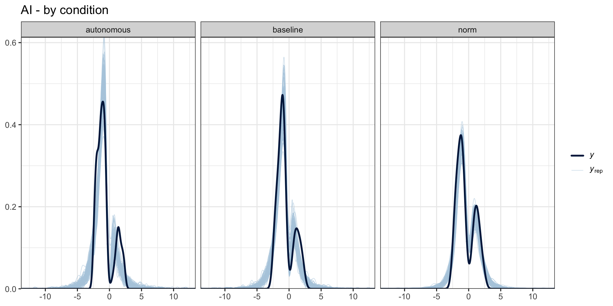
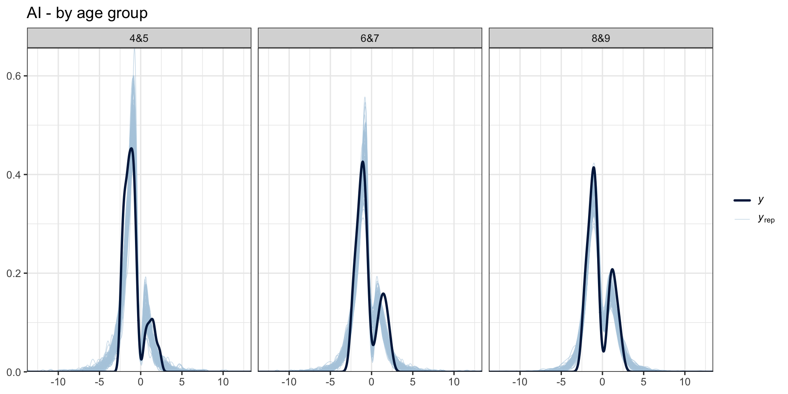
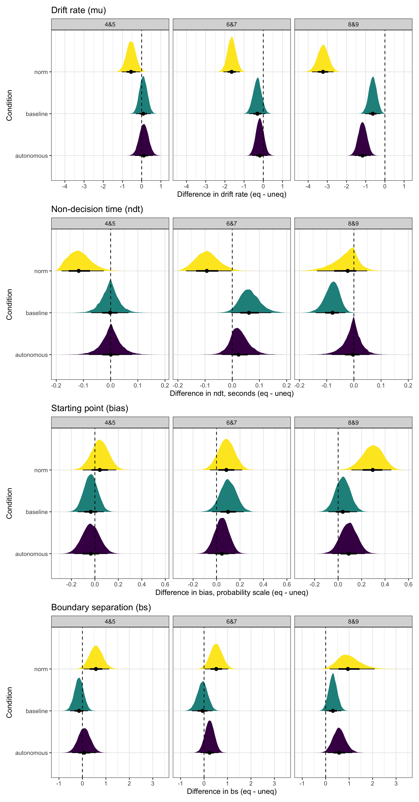
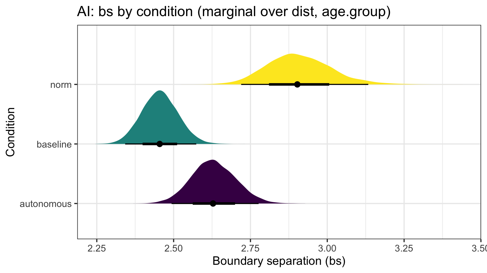

── Attaching core tidyverse packages ──────────────────────── tidyverse 2.0.0 ──
✔ dplyr 1.2.1 ✔ readr 2.2.0
✔ forcats 1.0.1 ✔ stringr 1.6.0
✔ ggplot2 4.0.3 ✔ tibble 3.3.1
✔ lubridate 1.9.5 ✔ tidyr 1.3.2
✔ purrr 1.2.2
── Conflicts ────────────────────────────────────────── tidyverse_conflicts() ──
✖ dplyr::filter() masks stats::filter()
✖ dplyr::lag() masks stats::lag()
ℹ Use the conflicted package (<http://conflicted.r-lib.org/>) to force all conflicts to become errors
library(brms)
Loading required package: Rcpp
Loading 'brms' package (version 2.23.0). Useful instructions
can be found by typing help('brms'). A more detailed introduction
to the package is available through vignette('brms_overview').
Attaching package: 'brms'
The following object is masked from 'package:stats':
ar
library(cmdstanr)
This is cmdstanr version 0.9.0
- CmdStanR documentation and vignettes: mc-stan.org/cmdstanr
- CmdStan path: /Users/jasongeller/.cmdstan/cmdstan-2.37.0
- CmdStan version: 2.37.0
A newer version of CmdStan is available. See ?install_cmdstan() to install it.
To disable this check set option or environment variable cmdstanr_no_ver_check=TRUE.
library(emmeans)
Welcome to emmeans.
Caution: You lose important information if you filter this package's results.
See '? untidy'
library(reformulas) # runtime dep of emmeans's brms/lme4-style random-effects supportlibrary(easystats)
Attaching package: 'tidybayes'
The following object is masked from 'package:parameters':
parameters
The following object is masked from 'package:bayestestR':
hdi
The following objects are masked from 'package:brms':
dstudent_t, pstudent_t, qstudent_t, rstudent_t
This document is rendered by the targets pipeline (_targets.R; run targets::tar_make() from the project root) and only reads its results. The model definition — formula, family, priors, starting values, and sampler settings — lives once in R/models.R, shared with the DI group; the code shown in the Model Specification chunks below is pulled from that file with knitr::read_chunk(), so it is exactly what was fit. Shared preprocessing lives in Scripts/data_prep.R, run once by the pipeline as the prepped_data target, so the AI and DI groups can’t drift out of sync on exclusion criteria. Paths use here::here(), resolved from the project root, so this works regardless of which directory actually renders the document.
store <-here("_targets")explicit_ai <-tar_read(prepped_data, store = store)$aihead(explicit_ai)
# A tibble: 6 × 9
sn condition duration trialnum dist distribution dec age.group
<fct> <fct> <dbl> <chr> <chr> <chr> <dbl> <fct>
1 sn4 autonomous 0.734 1 eq ai 1 6&7
2 sn4 autonomous 0.868 2 uneq ai 1 6&7
3 sn4 autonomous 1.03 4 eq ai 1 6&7
4 sn4 autonomous 0.501 5 uneq ai 1 6&7
5 sn4 autonomous 0.801 6 uneq ai 1 6&7
6 sn4 autonomous 0.767 7 uneq ai 1 6&7
# ℹ 1 more variable: dec_recode <dbl>
# Primary vs weak-prior fit: equal - unequal contrasts and convergence,# computed by the pipeline (summarize_fit() in R/sensitivity.R) and quoted# inline in the Prior sensitivity check below.sens_main <-tar_read(summary_ai_informative, store = store)sens_weak <-tar_read(summary_ai_weak, store = store)sens_changes <-lapply(setNames(nm =names(ddm_parameters)),function(p) credibility_changes(sens_main, sens_weak, p))
Model Specification
We modeled response time and choice jointly with a hierarchical Bayesian drift diffusion model (the Wiener process; Ratcliff, 1978), estimated via brms (Bürkner, 2017), which compiles the model to Stan (Carpenter et al., 2017) and samples it here with cmdstanr. The DDM decomposes each trial’s observed response time and binary choice (accept vs. reject) into four latent parameters: drift rate (mu, rate and direction of evidence accumulation — negative toward accept, positive toward reject, given how dec_recode was coded), non-decision time (ndt, encoding and motor-execution time not attributable to the decision process itself), starting point (bias, the initial position between the two response boundaries, expressed as a proportion of boundary separation), and boundary separation (bs, response caution — how much evidence is required before committing to a response).
Fixed and random effects
mu, ndt, bias, and bs were each modeled with the full condition * dist * age.group factorial structure, using 0 + condition:dist:age.group (cell-means) coding, which assigns a single directly-interpretable parameter to each of the 18 condition x dist x age group cells rather than decomposing them into main effects and interactions. This coding was adopted because it is a necessary condition for assigning every cell an equal prior: under the conventional main-effects-plus-interactions expansion, a shared prior scale on every coefficient does not translate into an equal implied prior on every cell’s mean, since cells differ in how many coefficients are summed to construct them. A prior-predictive check (posterior draws generated from the prior alone) confirmed that the conventional coding produces up to 2.7-fold differences in implied prior SD across cells, whereas the cell-means coding used here flattens this to within 5-11%. bs was estimated as a single, freely-varying parameter with no predictors, and bias was fixed at 0.5 (unbiased), in earlier model iterations before each being given this same full factorial structure. By-subject random intercepts and slopes for dist were included on mu only ((1 + dist | p | sn)) in earlier iterations; random effects on ndt, bias, and bs were explored during that development and abandoned after producing severe divergences, when bs was still a single global parameter — with this few trials per subject per condition/allocation cell, individual differences in non-decision time and starting point are still not well identified separately from individual differences in drift rate. bs and bias have since been revisited: now that both have the same full factorial structure as mu (unlike the earlier attempt, where bias was still fixed at 0.5 and bs was still a single global parameter), they also get the same (1 + dist | p | sn) by-subject random intercept and dist slope, sharing the group id p with mu’s random effects — so brms estimates one correlated 6-dimensional random-effects block (intercept + dist slope, for each of mu, bs, and bias) per subject, rather than three independent 2-dimensional ones. ndt still has no random effects; unlike bias, it never had the fixed-effects-structure confound (it always had the full factorial structure), so its earlier divergences are more likely a genuine identifiability limit rather than an artifact worth revisiting.
constrained via prior bounds (below), not the link
bias
starting point
logit
constrains estimates to (0, 1)
bs
boundary separation
identity
now has the full condition:dist:age.group structure (like ndt/bias), so it’s an unconstrained linear predictor at the Stan-declaration level; positivity is enforced via the prior’s lb = 0, not the link — same mechanism as ndt
Priors were specified for every modeled parameter and were not uniformly weakly informative. For the fixed effects, drift rate, starting point, and boundary separation received weakly informative priors — Normal(0, 1) on drift rate, Normal(0, 1) (logit scale) on starting point, and Normal(2, 1) truncated to be positive on boundary separation — and their posterior SDs came back an order of magnitude narrower than these priors, indicating the data, not the prior, determined the estimates. Non-decision time received a more concentrated fixed-effect prior, Normal(0.3, 0.1) truncated to [0, minimum RT], reflecting its comparatively weak identifiability from RT and choice data alone. By-subject random intercepts and slopes for split type (equal vs. unequal) were included on drift rate, boundary separation, and starting point, correlated within subject; their standard deviations used a deliberately informative — not weakly informative — Normal(0, 0.03) truncated-positive prior, considerably tighter than field-standard defaults (e.g., HDDM’s HalfNormal(2), HalfNormal(0.1), and HalfNormal(0.05) for the analogous parameters; Wiecki et al., 2013). This departure from convention was empirically motivated: with a median of only 5 trials per subject per split-type condition (range 2–6; 134 subjects), looser random-effect priors produced severe sampler divergence in earlier, less-structured versions of this model. A second, fully-fit model using weakly informative priors throughout — including HDDM’s own default scales on the random-effect SDs — was run as a formal sensitivity check (see Prior sensitivity check below), and unlike that earlier divergence history, it now converges cleanly (0 divergences, max Rhat 1.006). It is not, however, substantively equivalent: switching to the weak prior costs drift rate 2 of its 5 credible condition-by-age cells and boundary separation 3 of its 4, while starting point and non-decision time are essentially unchanged. Boundary separation’s findings in particular should be read as prior-sensitive rather than as robust as drift rate’s — see Prior sensitivity check for the full breakdown and Boundary Separation below for how this qualifies those results. This is a different question from the one addressed in Justification for the random-effect prior scale, point 5 below, which is easy to conflate with this one since both are called “robustness checks.” That earlier check, from before bs and bias had random effects at all, compares the current model against ai_ddm_3way_bs — an earlier cached fit from back when bs/bias had no (1 + dist | p | sn) term — with the 0.03 prior held fixed in both. It found ~zero credibility reversals, but it is asking “does adding random effects to bs/bias change the results,” not “does the random-effect prior’s scale change the results.” Both models in that comparison have the same tight prior; both models in this comparison have the same random-effects structure. They are independent questions, and only this one — prior scale — turned out to matter for boundary separation.
ddm_prior_informative <-function() { brms::prior(normal(0, 1), class = b) +# drift rate (mu) fixed effects brms::prior(normal(0.3, 0.1), class = b, dpar = ndt, lb =0, ub ="min_Y") +# ndt fixed effects brms::prior(normal(0, 1), class = b, dpar = bias) +# bias, logit scale: 0.5 <-> logit 0 brms::prior(normal(2, 1), class = b, dpar = bs, lb =0) +# bs fixed effects; centered near the pooled single-parameter fit (~2.6-2.7) brms::prior(normal(0, 0.03), class = sd, group = sn, lb =0) +# by-subject random effects (mu) brms::prior(normal(0, 0.03), class = sd, dpar = bs, group = sn, lb =0) +# by-subject random effects (bs) -- same tight scale as mu, made explicit brms::prior(normal(0, 0.03), class = sd, dpar = bias, group = sn, lb =0) # by-subject random effects (bias, logit scale) -- same tight scale again}
bs now gets its own explicit prior (normal(2, 1), lb = 0) rather than riding on brms’s default — necessary once it has a 0 + ... predictor formula, since that coding drops the Intercept-level positivity constraint brms applies to a parameter-less bs, leaving class = b, dpar = bs with an unbounded flat default unless one is specified.
bs’s and bias’s random-effect SD priors are each listed as a separate line above (dpar = bs, dpar = bias) even though, mechanically, the mu line’s class = sd, group = sn prior (no dpar) would already broadcast across the whole correlated 6-element sd_1 vector mu, bs, and bias’s random effects now share — confirmed by inspecting the generated Stan code, where a single normal_lpdf(sd_1 | 0, 0.03) call covers all 6 elements. The explicit dpar lines are redundant with that default in the current model, but are kept so the choice to reuse mu’s tight scale for both is visible and deliberately reviewable here, rather than an accident of how brms matches priors — mu, bs, and bias each live on a different natural scale (roughly -1 to -3, roughly 2-4, and the logit scale respectively), and a prior scale calibrated for one doesn’t necessarily suit the others; 0.03 was retained across all three only because it’s the same conservative choice that avoided the severe divergences random effects previously produced here.
bias’s random effects are a re-attempt of something else explicitly flagged as risky earlier in this document: random effects on bias previously produced severe divergences, back when bias was fixed at 0.5 rather than having the full factorial fixed-effects structure it has now. Given the Fixed and random effects section’s separate note that bias’s earlier failure was attributed partly to a genuine identifiability limit (not just the missing fixed-effects structure that turned out to explain bs’s earlier failure), this is less certain to succeed than bs’s random effects did — check the Convergence section below carefully, and don’t trust Results that depend on this fit if it reproduces that failure mode.
Prior sensitivity check: weak vs. informative
ddm_prior_weak <-function() { brms::prior(normal(0, 3), class = b) +# drift rate (mu) fixed effects -- 3x wider brms::prior(normal(0.3, 0.3), class = b, dpar = ndt, lb =0, ub ="min_Y") +# ndt fixed effects -- 3x wider SD, same structural bounds brms::prior(normal(0, 3), class = b, dpar = bias) +# bias, logit scale -- 3x wider brms::prior(normal(2, 3), class = b, dpar = bs, lb =0) +# bs fixed effects -- 3x wider brms::prior(normal(0, 2), class = sd, group = sn, lb =0) +# by-subject REs (mu) -- HDDM's own default scale brms::prior(normal(0, 0.1), class = sd, dpar = bs, group = sn, lb =0) +# by-subject REs (bs) -- HDDM's own default scale brms::prior(normal(0, 0.05), class = sd, dpar = bias, group = sn, lb =0) # by-subject REs (bias) -- HDDM's own default scale}
The fit itself (fit_ai_weak) is loaded in the Estimation section below. It uses the same starting-value function as the main fit (ddm_inits(), below), built from its own prior.
Results.fit_ai_weak converges as cleanly as the main model (0 divergent transitions, max Rhat 1.006 across 4 chains x 5,000 iterations) — the earlier divergence history under looser priors does not reproduce once bs and bias have the full factorial fixed-effects structure. Convergence is not the same as agreement, though. Comparing the same dist (equal-vs-unequal) contrasts, by condition x age.group, that the Results section below reports:
Drift rate and starting point are largely prior-robust: drift rate’s two lost cells (norm@4-5y: -0.554 [-1.04, -0.07] → -0.692 [-1.70, 0.31]; baseline@8-9y: -0.631 [-1.04, -0.24] → -0.774 [-1.61, 0.04]) keep the same sign and roughly the same point estimate under the weak prior — the interval simply widens past zero, which is the expected behavior of removing a regularizing prior on sparse per-subject data, not evidence the effect is spurious. Boundary separation is not robust: norm@4-5y, norm@6-7y, autonomous@8-9y all lose credibility, leaving only norm@8-9y — exactly the cells that carry the “norm widens boundaries specifically on equal-split trials, from the youngest age tested” claim in the Results section below. That claim should be read as resting substantially on the choice of a tight, empirically-motivated-but-nonstandard random-effect prior, not as a finding that would survive a field-standard prior specification. See Boundary Separation below for how this qualifies that section’s conclusions.
Custom starting values, since default inits tend to land somewhere the wiener likelihood can’t evaluate.
# Custom starting values, since default inits tend to land somewhere the# wiener likelihood can't evaluate. Returns a function, as brm(init = ) expects.ddm_inits <-function(data, prior) { sdat <- brms::make_standata(ddm_formula(), family =ddm_family(), data = data, prior = prior)function() {list(b =rnorm(sdat$K, 0, 0.2),b_bs =rnorm(sdat$K_bs, 2, 0.3),b_ndt =runif(sdat$K_ndt, 0.001, 0.05),b_bias =rnorm(sdat$K_bias, 0, 0.1),sd_1 =runif(sdat$M_1, 0.05, 0.1),z_1 =matrix(rnorm(sdat$M_1 * sdat$N_1, 0, 0.01), sdat$M_1, sdat$N_1),L_1 =diag(sdat$M_1) ) }}
Estimation
Sampler settings are defined once in R/models.R and used both by the pipeline’s brm() call (fit_ddm()) and by the Methods-style description below, so the two can’t drift apart. fit_ddm() also checks the saved fit’s chains, iterations, warmup, and thinning against these settings and refits if they differ.
The model was fit with 4 MCMC chains of 5000 iterations each (1000 warmup), thinned by 1, yielding 16000 post-warmup draws. The target average Metropolis acceptance probability (adapt_delta) was set to 0.95 and maximum treedepth to 15, both raised above brms’s defaults to accommodate the added sampling difficulty from bias’s full factorial structure and, now, bs’s and bias’s random effects.
The fit is produced by the pipeline’s fit_ai_informative target, which calls fit_ddm() with the same 1244-row explicit_ai shown above and caches the result as analysis/models/ai_ddm_3way_bs_bias_re_ndraws.rds (split into .partNNN chunks for GitHub). It uses brm(file_refit = "on_change"): the saved fit is reloaded unless the Stan code, the data, or the sampler settings have changed, in which case the model is refit. This document only reads the result.
This model supersedes an earlier fit (ai_ddm_3way_bs_re, no longer kept) in which only bs had by-subject random effects. The current model adds the same (1 + dist | p | sn) random effects to bias too, joining the correlated random-effects block that already spanned mu and bs (see Fixed and random effects). As with bs’s random effects, this is a re-attempt of something explicitly flagged as risky earlier in this document — check the Convergence section below carefully before trusting any Results that depend on this fit; if it reproduces the earlier severe-divergence failure mode, the right fallback is reverting to ai_ddm_3way_bs_re (random effects on bs only, not bias), not pushing through with a poorly-converged fit.
fit_ai <-readRDS(here(tar_read(fit_ai_informative, store = store)[1]))
Weak-prior comparison fit
Same formula and data as fit_ai above, with ddm_prior_weak() (see Priors > Prior sensitivity check) in place of the informative prior. Same sampler settings as well (sampler_settings() in R/models.R). Cached separately (fit_ai_weak target) so both fits are inspectable side by side rather than one overwriting the other.
fit_ai_weak <-readRDS(here(tar_read(fit_ai_weak, store = store)[1]))
Credibility Criterion
Contrasts are judged credible based on the 95% credible interval excluding zero together with the probability of direction (pd > 97.5%). Region-of-practical-equivalence (ROPE) percentages are also computed and available in the extracted results objects (each distributional parameter gets its own scaled range, since the automatic default has no supported method for a multi-parameter Wiener/DDM family — see the rope-ranges chunk under Extract Results), but ROPE is reported only for supplementary context here, not as the basis for calling an effect credible.
Convergence check
Rhat/ESS, plus a check for non-finite log-likelihood entries — a distinct failure mode from divergences (a single NaN in the log-lik matrix poisons elpd_loo/loo() sums even when Rhat and pareto-k both look clean; the usual DDM-specific cause is a posterior draw where ndt ends up larger than a trial’s actual RT).
easystats::check_predictions() (via performance::check_predictions.brmsfit()) does not work on this model — it routes through modelbased::estimate_prediction(), which reconstructs newdata in a way that fails brms::validate_newdata()’s check against the 134-level sn random-effects factor, regardless of the wiener/dec() response structure. bayesplot::ppc_dens_overlay() called directly on posterior_predict()’s output works and is used instead.
The wiener family’s posterior_predict() returns raw (unsigned) RTs by default; negative_rt = TRUE signs each draw by which boundary it hit (positive = the dec_recode = 1 boundary, negative = dec_recode = 0), which is what makes it possible to check the joint choice + RT distribution — not just the marginal RT distribution — against the same signed transform of the observed data.
bayesplot::ppc_dens_overlay_grouped(y = y_obs_ai, yrep = yrep_ai, group = explicit_ai$condition) +labs(title ="AI - by condition") +theme_bw(base_size =12)

Figure 2
bayesplot::ppc_dens_overlay_grouped(y = y_obs_ai, yrep = yrep_ai, group = explicit_ai$age.group) +labs(title ="AI - by age group") +theme_bw(base_size =12)

Figure 3
Both the overall check and the checks split by condition and by age group show the model reproducing the bimodal accept/reject shape closely — peak locations and heights both track the observed data well, with the predictive draws showing only slightly more spread in the tails than observed, which is expected posterior uncertainty rather than a sign of misfit.
Extract results (modelbased)
Everything the write-up below quotes comes from these objects — re-run this chunk after refitting and the prose updates itself.
ROPE ranges
estimate_contrasts()’s automatic ROPE default couldn’t be derived for this model (a Wiener/DDM family with four distributional parameters isn’t something bayestestR::rope_range()’s heuristic knows how to compute a scale for), so instead of accepting its flat [-0.1, 0.1] fallback — which would apply the same raw number to mu (drift-rate units), ndt (seconds), and bias (probability) despite their very different natural scales — each parameter gets its own ROPE range: 10% of that parameter’s own fitted posterior SD (posterior_epred(fit_ai, dpar = ...)), the same logic the automatic default uses for ordinary models, just computed by hand per dpar here.
mu ndt bias bs
0.072035643 0.004617972 0.008488420 0.043719706
estimate_contrasts() doesn’t guarantee which level lands in Level1 vs Level2 — confirmed (see ddm-di.qmd) that this flips between datasets for reasons unrelated to the actual estimate. Normalize to eq - uneq explicitly rather than relying on it happening to come out that way.
# Force every contrasts_* object below to report eq - uneq, regardless of# which order estimate_contrasts() happened to assign Level1/Level2.normalize_eq_minus_uneq <-function(df) { flip <- df$Level1 =="uneq"if (any(flip)) { new_low <--df$CI_high[flip] new_high <--df$CI_low[flip] df$Difference[flip] <--df$Difference[flip] df$CI_low[flip] <- new_low df$CI_high[flip] <- new_high tmp <- df$Level1[flip] df$Level1[flip] <- df$Level2[flip] df$Level2[flip] <- tmp# pd and ROPE_Percentage are both symmetric around 0 and unaffected by the flip } df}
# dist (equal vs unequal) simple effects, by condition x age.group, on drift ratecontrasts_mu <-estimate_contrasts( fit_ai, contrast ="dist", by =c("condition", "age.group"),predict ="mu", backend ="emmeans", rope_range =c(-rope_mu, rope_mu)) |>normalize_eq_minus_uneq()# same, on non-decision timecontrasts_ndt <-estimate_contrasts( fit_ai, contrast ="dist", by =c("condition", "age.group"),predict ="ndt", backend ="emmeans", rope_range =c(-rope_ndt, rope_ndt)) |>normalize_eq_minus_uneq()# same, on starting point (bias) -- meaningful now that bias has the full# condition*dist*age.group structure rather than being fixed at 0.5contrasts_bias <-estimate_contrasts( fit_ai, contrast ="dist", by =c("condition", "age.group"),predict ="bias", backend ="emmeans", rope_range =c(-rope_bias, rope_bias)) |>normalize_eq_minus_uneq()# marginal bias (starting point) by condition, on the natural (0,1) scale --# a simpler summary alongside the dist-contrast version abovebias_by_condition <-estimate_means( fit_ai, by ="condition", predict ="bias", backend ="emmeans")# same, on boundary separation (bs) -- meaningful now that bs has the full# condition*dist*age.group structure rather than being a single global parametercontrasts_bs <-estimate_contrasts( fit_ai, contrast ="dist", by =c("condition", "age.group"),predict ="bs", backend ="emmeans", rope_range =c(-rope_bs, rope_bs)) |>normalize_eq_minus_uneq()# marginal bs by condition, on the natural (seconds-of-evidence-units) scalebs_by_condition <-estimate_means( fit_ai, by ="condition", predict ="bs", backend ="emmeans")contrasts_mu
Estimated Marginal Means
condition | Bs | 95% CI | pd
---------------------------------------
autonomous | 2.63 | [2.49, 2.78] | 100%
baseline | 2.45 | [2.34, 2.57] | 100%
norm | 2.90 | [2.72, 3.13] | 100%
Variable predicted: duration, dec_recode
Predictors modulated: condition
Predictions are on the bs-scale.
Main effects
Alongside the dist contrast within each condition x age.group cell (above), each parameter also gets its three simple main effects — age (marginal over condition and dist), condition (marginal over age and dist), and dist (marginal over condition and age) — computed once here and reported under each parameter’s Results subsection below. These are genuine marginal quantities (averaged over the other two factors), not a substitute for the cell-level contrasts, which remain the primary results.
Check these column names before trusting the formatting helpers below — estimate_contrasts()/estimate_means() output can shift slightly across modelbased versions, and the helpers assume the standard Difference/Mean, CI_low, CI_high, pd names.
# Pull one row out of a contrasts/means table by column = value filters, e.g.# fmt_contrast(contrasts_mu, condition = "norm", age.group = "4&5")filter_row <-function(df, ...) { filters <-list(...) row <- dffor (col innames(filters)) row <- row[row[[col]] == filters[[col]], ]if (nrow(row) !=1) stop("filter matched ", nrow(row), " rows, expected 1") row}fmt_contrast <-function(df, ...) { row <-filter_row(df, ...)sprintf("%s, 95%% CI [%s, %s], *pd* = %s%%", insight::format_value(row$Difference), insight::format_value(row$CI_low), insight::format_value(row$CI_high), insight::format_value(row$pd *100, digits =1) )}fmt_mean <-function(df, ...) { row <-filter_row(df, ...)# estimate_means() names the value column after the dpar (e.g. "Bias"), not "Mean" value_col <-setdiff(names(df), c(names(list(...)), "CI_low", "CI_high", "pd", "ROPE_Percentage"))sprintf("%s, 95%% CI [%s, %s]", insight::format_value(row[[value_col]]), insight::format_value(row$CI_low), insight::format_value(row$CI_high))}# Primary credibility criterion: the 95% credible interval excludes zero AND# pd clears the conventional 97.5% bar. These two will usually agree (a CI# excluding zero and pd > 97.5% are closely related for well-behaved# posteriors), so requiring both is a small extra safeguard, not two# independent hurdles. This is the primary criterion used throughout —# ROPE/practical-significance is reported for context (see rope-ranges chunk)# but is not the basis for calling something "credible" here.credible_label <-function(df, ..., pd_threshold =0.975) { row <-filter_row(df, ...) ci_excludes_zero <- (row$CI_low >0) || (row$CI_high <0)if (ci_excludes_zero && row$pd > pd_threshold) "credible"else"not credible"}# Three-way ROPE classification (Kruschke, 2018; Makowski et al., 2019) --# kept available for anyone who wants the practical-significance detail, but# not used as the primary credibility criterion in the prose below (that's# credible_label() above, based on the 95% CrI and pd).practical_label <-function(df, ..., lower =0.05, upper =0.95) { row <-filter_row(df, ...)if (row$ROPE_Percentage <= lower) {"practically meaningful" } elseif (row$ROPE_Percentage > upper) {"negligible" } else {"ambiguous" }}fmt_rope <-function(df, ...) { row <-filter_row(df, ...)paste0(insight::format_value(row$ROPE_Percentage *100, digits =1), "%")}# Compact tables for the main-effects subsections below -- same credibility# criterion as credible_label() above (95% CrI excludes zero AND pd > 97.5%),# rendered as a Yes/No column instead of one sentence per row.kable_means <-function(df, digits =3) knitr::kable(df, digits = digits)kable_contrasts <-function(df, digits =3, pd_threshold =0.975) { df$Credible <-ifelse((df$CI_low >0| df$CI_high <0) & df$pd > pd_threshold, "Yes", "No") knitr::kable(df[, c("Level1", "Level2", "Difference", "CI_low", "CI_high", "pd", "Credible")], digits = digits)}# How many of the 9 condition x age.group cells clear the credibility bar# (95% CrI excludes zero AND pd > 97.5% -- same joint criterion as# credible_label() above, not a ROPE-based count). Defined here rather than# down in the Summary section since the per-parameter Results paragraphs# above now also quote this count.count_credible <-function(df, pd_threshold =0.975) {sum((df$CI_low >0| df$CI_high <0) & df$pd > pd_threshold)}
Results
Drift Rate
At 4–5 years — the youngest age tested — autonomous (0.11, 95% CI [-0.36, 0.58], pd = 68.0%, not credible) and baseline (0.08, 95% CI [-0.31, 0.47], pd = 65.9%, not credible) show little evidence that children differentiate between equal and unequal outcomes, but the norm condition already does (-0.55, 95% CI [-1.04, -0.07], pd = 98.8%). This pattern persists at 6–7 years: norm remains credible (-1.65, 95% CI [-2.08, -1.21], pd = 100.0%), while autonomous (-0.18, 95% CI [-0.58, 0.22], pd = 81.2%, not credible) and baseline (-0.31, 95% CI [-0.74, 0.12], pd = 92.2%, not credible) remain non-credible. By 8–9 years, credible distinctions are evident in all three conditions: autonomous, -1.16, 95% CI [-1.60, -0.73], pd = 100.0%; baseline, -0.63, 95% CI [-1.04, -0.24], pd = 99.9%; and norm, -3.22, 95% CI [-3.80, -2.67], pd = 100.0%. The emergence of credible effects in the autonomous and baseline conditions at 8–9 years aligns with developmental work suggesting that advantageous inequity aversion typically emerges around this age (Blake & McAuliffe, 2011). Norm’s credibility from the youngest age tested onward suggests that explicit fairness framing does not just pull that sensitivity forward to an intermediate age, but makes it detectable years earlier than it otherwise appears.
Plotted together with ndt, bias, and bs at the end of the Results section (one combined figure, p_mu/p_ndt/p_bias/p_bs stacked via patchwork) rather than as four separate figures.
draws_mu <-pairs(emmeans(fit_ai, ~ dist | condition * age.group, dpar ="mu")) |>gather_emmeans_draws()p_mu <-ggplot(draws_mu, aes(x = .value, y = condition, fill = condition)) +stat_halfeye() +facet_wrap(~age.group) +geom_vline(xintercept =0, linetype ="dashed") +scale_fill_viridis_d(guide ="none") +labs(x ="Difference in drift rate (eq - uneq)", y ="Condition", title ="Drift rate (mu)") +theme_bw(base_size =14)
Main Effects
Simple main effects of mu — age (marginal over condition and dist), condition (marginal over age and dist), and dist (marginal over condition and age) — alongside the cell-level dist contrasts above.
Age.
kable_means(mu_by_age)
age.group
Mu
CI_low
CI_high
pd
4&5
-0.854
-0.994
-0.719
1
6&7
-0.578
-0.708
-0.451
1
8&9
-0.485
-0.627
-0.343
1
kable_contrasts(contrasts_mu_age)
Level1
Level2
Difference
CI_low
CI_high
pd
Credible
4&5
6&7
-0.277
-0.465
-0.091
0.998
Yes
4&5
8&9
-0.370
-0.564
-0.178
1.000
Yes
6&7
8&9
-0.093
-0.284
0.098
0.831
No
Drift rate strengthens (grows more negative) credibly from 4–5y to both 6–7y and 8–9y, but the 6–7y-to-8–9y step itself is not credible — most of the age-related change in overall drift rate is already in place by 6–7y.
Condition.
kable_means(mu_by_cond)
condition
Mu
CI_low
CI_high
pd
autonomous
-0.772
-0.909
-0.639
1
baseline
-0.630
-0.753
-0.507
1
norm
-0.516
-0.665
-0.367
1
kable_contrasts(contrasts_mu_cond)
Level1
Level2
Difference
CI_low
CI_high
pd
Credible
autonomous
baseline
-0.141
-0.326
0.035
0.939
No
autonomous
norm
-0.256
-0.457
-0.060
0.996
Yes
baseline
norm
-0.114
-0.307
0.081
0.876
No
Only the autonomous-vs-norm comparison is credible (-0.26, 95% CI [-0.46, -0.06], pd = 99.6%); autonomous-vs-baseline and baseline-vs-norm are not. This marginal condition effect is a much weaker signal than the condition x dist x age structure driving the cell-level results above.
Dist.
kable_means(mu_by_dist)
dist
Mu
CI_low
CI_high
pd
eq
-1.057
-1.170
-0.948
1
uneq
-0.221
-0.331
-0.113
1
kable_contrasts(contrasts_mu_dist)
Level1
Level2
Difference
CI_low
CI_high
pd
Credible
eq
uneq
-0.835
-0.987
-0.687
1
Yes
Averaged across every condition and age, drift rate is credibly more negative on equal-split trials than unequal-split trials (-0.83, 95% CI [-0.99, -0.69], pd = 100.0%) — expected given how strongly dist interacts with condition and age above; this marginal number isn’t a story on its own.
Non-Decision Time
Non-decision time shows little evidence of a systematic equal-vs.-unequal distinction (see figure below). There is little indication that the fairness manipulation operates through changes in non-decision processes.
draws_ndt <-pairs(emmeans(fit_ai, ~ dist | condition * age.group, dpar ="ndt")) |>gather_emmeans_draws()p_ndt <-ggplot(draws_ndt, aes(x = .value, y = condition, fill = condition)) +stat_halfeye() +facet_wrap(~age.group) +geom_vline(xintercept =0, linetype ="dashed") +scale_fill_viridis_d(guide ="none") +labs(x ="Difference in ndt, seconds (eq - uneq)", y ="Condition", title ="Non-decision time (ndt)") +theme_bw(base_size =14)
Main Effects
Age.
kable_means(ndt_by_age)
age.group
Ndt
CI_low
CI_high
pd
4&5
0.151
0.126
0.169
1
6&7
0.146
0.121
0.166
1
8&9
0.163
0.139
0.180
1
kable_contrasts(contrasts_ndt_age)
Level1
Level2
Difference
CI_low
CI_high
pd
Credible
4&5
6&7
0.005
-0.026
0.035
0.631
No
4&5
8&9
-0.012
-0.042
0.018
0.797
No
6&7
8&9
-0.017
-0.047
0.013
0.875
No
No pairwise age difference in ndt is credible — consistent with the cell-level result above that ndt carries no coherent age pattern.
Condition.
kable_means(ndt_by_cond)
condition
Ndt
CI_low
CI_high
pd
autonomous
0.172
0.148
0.188
1
baseline
0.158
0.137
0.174
1
norm
0.129
0.102
0.151
1
kable_contrasts(contrasts_ndt_cond)
Level1
Level2
Difference
CI_low
CI_high
pd
Credible
autonomous
baseline
0.013
-0.015
0.040
0.834
No
autonomous
norm
0.042
0.011
0.074
0.996
Yes
baseline
norm
0.029
-0.001
0.060
0.971
No
Autonomous-vs-norm is the one credible pairwise condition difference (0.04, 95% CI [0.01, 0.07], pd = 99.6%); autonomous-vs-baseline and baseline-vs-norm are not.
Dist.
kable_means(ndt_by_dist)
dist
Ndt
CI_low
CI_high
pd
eq
0.140
0.120
0.156
1
uneq
0.166
0.147
0.181
1
kable_contrasts(contrasts_ndt_dist)
Level1
Level2
Difference
CI_low
CI_high
pd
Credible
eq
uneq
-0.026
-0.051
-0.001
0.98
Yes
The marginal eq-vs-uneq difference in ndt is credible (-0.03, 95% CI [-0.05, -1.25e-03], pd = 98.0%) — the CI just touches zero. Combined with the age and condition results above, ndt’s main effects are as weak and inconsistent as its cell-level dist contrasts.
Starting Point (Bias)
One caveat: because children cannot know whether an upcoming trial is equal or unequal before it starts, bias is best understood as a pre-trial setting rather than something that should vary by trial type. A credible equal-vs.-unequal difference here more likely reflects the model absorbing some residual asymmetry between trial types than a literal advance adjustment.
Starting-point estimates are also highly similar across conditions.
contrasts_bias (via modelbased) is on the response (0-1 probability) scale by default — confirmed by comparing it directly against emmeans(...) |> regrid("response") |> pairs(), which matches it exactly (both give -0.0129 for autonomous@4&5, for example), while the plain link-scale pairs() (no regrid()) gives a different, larger number (-0.052 for the same cell). So the plot below uses regrid("response") before pairs() to match the scale the prose is already quoting, rather than the logit scale.
draws_bias <-emmeans(fit_ai, ~ dist | condition * age.group, dpar ="bias") |>regrid("response") |>pairs() |>gather_emmeans_draws()p_bias <-ggplot(draws_bias, aes(x = .value, y = condition, fill = condition)) +stat_halfeye() +facet_wrap(~age.group) +geom_vline(xintercept =0, linetype ="dashed") +scale_fill_viridis_d(guide ="none") +labs(x ="Difference in bias, probability scale (eq - uneq)", y ="Condition", title ="Starting point (bias)") +theme_bw(base_size =14)
Main Effects
Like the cell-level contrasts above, bias_by_age/_cond/_dist and their contrasts are on the natural (0-1 probability) response scale — estimate_means()/estimate_contrasts() return that scale by default for bias, same as contrasts_bias above.
Age.
kable_means(bias_by_age)
age.group
Bias
CI_low
CI_high
pd
4&5
0.583
0.543
0.623
1
6&7
0.540
0.500
0.578
1
8&9
0.518
0.472
0.562
1
kable_contrasts(contrasts_bias_age)
Level1
Level2
Difference
CI_low
CI_high
pd
Credible
4&5
6&7
0.043
-0.012
0.098
0.935
No
4&5
8&9
0.065
0.006
0.124
0.984
Yes
6&7
8&9
0.022
-0.036
0.081
0.770
No
Only 4–5y-vs-8–9y is credible (0.06, 95% CI [5.76e-03, 0.12], pd = 98.4%); the adjacent-age steps (4–5y-vs-6–7y, 6–7y-vs-8–9y) are not, so this reads as a gradual drift rather than a sharp age transition.
Condition.
kable_means(bias_by_condition)
condition
Bias
CI_low
CI_high
pd
autonomous
0.558
0.517
0.600
1
baseline
0.553
0.517
0.589
1
norm
0.529
0.482
0.575
1
kable_contrasts(contrasts_bias_cond)
Level1
Level2
Difference
CI_low
CI_high
pd
Credible
autonomous
baseline
0.004
-0.049
0.060
0.562
No
autonomous
norm
0.029
-0.032
0.090
0.824
No
baseline
norm
0.024
-0.034
0.083
0.792
No
No pairwise condition difference is credible — consistent with the marginal-by-condition means already reported above, which sit at a small, universal lean toward the reject boundary regardless of condition.
Dist.
kable_means(bias_by_dist)
dist
Bias
CI_low
CI_high
pd
eq
0.581
0.546
0.617
1
uneq
0.511
0.479
0.545
1
kable_contrasts(contrasts_bias_dist)
Level1
Level2
Difference
CI_low
CI_high
pd
Credible
eq
uneq
0.07
0.023
0.118
0.998
Yes
Averaged over condition and age, the eq-vs-uneq difference in starting point is credible (0.07, 95% CI [0.02, 0.12], pd = 99.8%) — the same caveat as above applies: since children can’t know a trial’s type in advance, this more likely reflects the model using bias’s flexibility to absorb residual asymmetry than a literal pre-trial predisposition.
Boundary Separation
One caveat: boundary separation is conventionally a pre-trial, response-caution setting rather than something that should vary by trial type, so a credible equal-vs.-unequal difference here more likely reflects the model absorbing some residual asymmetry between trial types than children genuinely adjusting caution in advance.
Boundary separation showed a secondary developmental pattern that broadly paralleled the pattern observed for drift rate. This correspondence was clearest in the norm condition, where the equal-versus-unequal contrast was already credible at 4–5 years (0.58, 95% CI [0.05, 1.14], pd = 98.4%), the same age at which the corresponding drift-rate contrast first became credible, and remained credible at 8–9 years (0.95, 95% CI [0.17, 2.09], pd = 99.3%). In the autonomous condition, the boundary-separation contrast became credible only at 8–9 years (0.57, 95% CI [0.08, 1.14], pd = 98.8%), again corresponding to the developmental pattern observed for drift rate. No credible boundary-separation contrasts were observed in the baseline condition, including at 8–9 years, when the corresponding drift-rate contrast was credible. Thus, the credible boundary-separation effects largely occurred in cells that also showed credible drift-rate effects, rather than providing evidence for an earlier or distinct developmental pattern. Consistent with these contrasts, marginal boundary separation was greatest in the norm condition (autonomous = 2.63, 95% CI [2.49, 2.78]; baseline = 2.45, 95% CI [2.34, 2.57]; norm = 2.90, 95% CI [2.72, 3.13]). These boundary-separation findings should nevertheless be interpreted cautiously. A formal prior-sensitivity analysis indicated that three of the four initially credible contrasts were no longer credible under a weakly informative random-effects prior, with only the norm contrast at 8–9 years remaining credible. In comparison, the drift-rate findings were substantially more robust to the same prior specification.
draws_bs <-pairs(emmeans(fit_ai, ~ dist | condition * age.group, dpar ="bs")) |>gather_emmeans_draws()p_bs <-ggplot(draws_bs, aes(x = .value, y = condition, fill = condition)) +stat_halfeye() +facet_wrap(~age.group) +geom_vline(xintercept =0, linetype ="dashed") +scale_fill_viridis_d(guide ="none") +labs(x ="Difference in bs (eq - uneq)", y ="Condition", title ="Boundary separation (bs)") +theme_bw(base_size =14)
Main Effects
Age.
kable_means(bs_by_age)
age.group
Bs
CI_low
CI_high
pd
4&5
2.631
2.492
2.783
1
6&7
2.542
2.413
2.681
1
8&9
2.813
2.644
3.027
1
kable_contrasts(contrasts_bs_age)
Level1
Level2
Difference
CI_low
CI_high
pd
Credible
4&5
6&7
0.088
-0.103
0.288
0.820
No
4&5
8&9
-0.184
-0.432
0.043
0.943
No
6&7
8&9
-0.272
-0.519
-0.055
0.994
Yes
Only 6–7y-vs-8–9y is credible (-0.27, 95% CI [-0.52, -0.06], pd = 99.4%) — the oldest group runs credibly wider boundaries than the middle group, but 4–5y isn’t credibly different from either neighbor, so this isn’t a clean monotonic maturation-of-caution trend.
Condition.
kable_means(bs_by_condition)
condition
Bs
CI_low
CI_high
pd
autonomous
2.628
2.493
2.777
1
baseline
2.455
2.342
2.574
1
norm
2.903
2.720
3.133
1
kable_contrasts(contrasts_bs_cond)
Level1
Level2
Difference
CI_low
CI_high
pd
Credible
autonomous
baseline
0.175
-0.003
0.354
0.973
No
autonomous
norm
-0.275
-0.534
-0.044
0.990
Yes
baseline
norm
-0.449
-0.697
-0.229
1.000
Yes
Norm runs credibly wider boundaries than both autonomous (-0.27, 95% CI [-0.53, -0.04], pd = 99.0%) and baseline (-0.45, 95% CI [-0.70, -0.23], pd = 100.0%); autonomous-vs-baseline is not credible. This is the clearest main effect in the whole bs picture and matches the norm-specific pattern already visible in the cell-level contrasts above.
Dist.
kable_means(bs_by_dist)
dist
Bs
CI_low
CI_high
pd
eq
2.833
2.695
2.997
1
uneq
2.493
2.386
2.608
1
kable_contrasts(contrasts_bs_dist)
Level1
Level2
Difference
CI_low
CI_high
pd
Credible
eq
uneq
0.341
0.16
0.536
1
Yes
Averaged over condition and age, boundary separation is credibly wider on equal-split trials than unequal-split trials (0.34, 95% CI [0.16, 0.54], pd = 100.0%) — the same direction as every credible cell-level dist contrast above, and the second-largest marginal dist effect reported in this document after mu’s.
Combined figure
All four eq - uneq contrasts, stacked (each keeps its own x-axis scale — drift rate, seconds, probability, and boundary-separation units aren’t comparable, so this isn’t a shared-axis figure, just a shared layout).
p_mu / p_ndt / p_bias / p_bs

Figure 4
For context, the marginal bias per condition (averaged over dist/age.group), on the natural (0, 1) scale: autonomous 0.56, 95% CI [0.52, 0.60], baseline 0.55, 95% CI [0.52, 0.59], norm 0.53, 95% CI [0.48, 0.58].
draws_bias_marginal <-emmeans(fit_ai, ~condition, dpar ="bias", type ="response") |>gather_emmeans_draws()
NOTE: Results may be misleading due to involvement in interactions
ggplot(draws_bias_marginal, aes(x = .value, y = condition, fill = condition)) +stat_halfeye() +geom_vline(xintercept =0.5, linetype ="dashed") +scale_fill_viridis_d(guide ="none") +labs(x ="Bias (starting point, 0-1 scale)", y ="Condition", title ="AI: bias by condition (marginal over dist, age.group)") +theme_bw(base_size =14)
Figure 5
For context, the marginal boundary separation per condition (averaged over dist/age.group): autonomous 2.63, 95% CI [2.49, 2.78], baseline 2.45, 95% CI [2.34, 2.57], norm 2.90, 95% CI [2.72, 3.13] — norm sits highest of the three.
NOTE: Results may be misleading due to involvement in interactions
ggplot(draws_bs_marginal, aes(x = .value, y = condition, fill = condition)) +stat_halfeye() +scale_fill_viridis_d(guide ="none") +labs(x ="Boundary separation (bs)", y ="Condition", title ="AI: bs by condition (marginal over dist, age.group)") +theme_bw(base_size =14)

Figure 6
Summary
Credibility throughout is based on the 95% credible interval excluding zero together with pd > 97.5% (count_credible(), defined in the formatters chunk above, alongside the other formatting helpers the per-parameter Results sections use).
Taken together, the effect of the fairness prompt on advantageous inequity aversion is concentrated primarily in drift rate, with boundary separation serving as a secondary, norm-specific locus present on essentially the same timeline as drift rate itself rather than emerging ahead of it — though, unlike drift rate, this secondary role depends substantially on the random-effect prior’s scale (Priors > Prior sensitivity check). Starting-point bias and non-decision time show little evidence of systematic involvement: the dist contrast reaches credibility in only 1 of 9 cells for bias and 3 of 9 for ndt, in both cases with no coherent age or condition trend, compared with 5 of 9 for drift rate and 4 of 9 for boundary separation. The prompt therefore appears to influence how strongly and how early children accumulate evidence differently for equal versus unequal outcomes, and — specifically under explicit fairness framing, and with the above caveat — how much evidence they require before committing to a response, rather than altering their initial response bias or the time required for perceptual and motor processes.